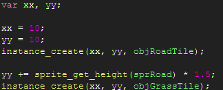
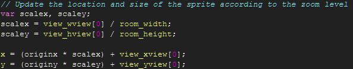
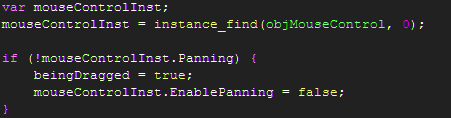
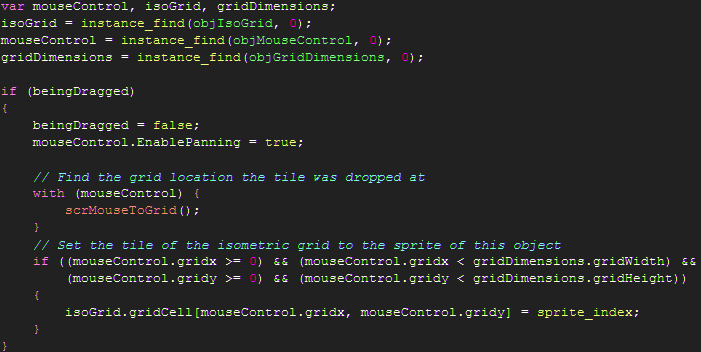
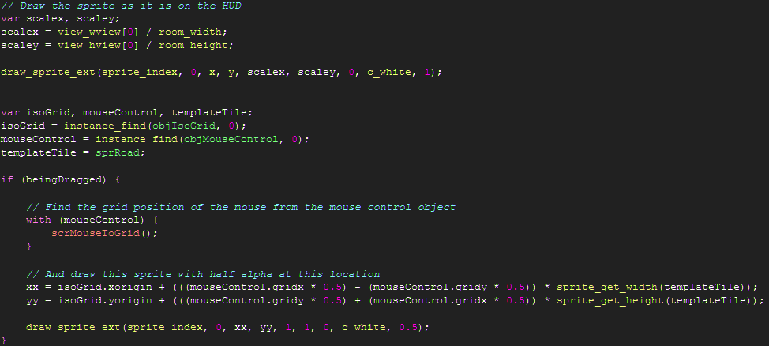

Tutorial
Page 6 of 6
The H.U.D and The Grid
In this section we will now look at a basic system that allows us to interact with the isometric grid and alter
the sprites at locations on the grid via a simple drag & drop interaction with elements of the HUD. Note that there
are other, better, ways of handling the the operation of the HUD, but the method in this tutorial doesn't require
any additional settings and also should give you an insight into why it's not the best way to handle its operation.
First we'll look at setting up the elements of the HUD via the script scrHUDInit, which is simply responsible
for placing two objects in the room that use objHudTile as their parent object.

Because the view of the room moves around and we've simply placed these objects in a corner of the room but actually
want them to remain on screen at all times at a fixed location and with a fixed size and as a result our drawing code needs to compensate
for the alterations to the view.
We actually update the position of the HUD elements by storing the original x and y in variables originx and originy in the
scrDragAndDropInit that is called on creation for the object and updating the x and y of the object in the step event using
the script scrDragAndDropUpdate

The purpose of these HUD elements is to allow the user to grab them and drag them onto the isometric grid, replacing the
tile at the location on the grid where they have dropped the tile. The selection of the item is handled automatically by
GameMaker's sprite/mouse collision events and we pass through this interaction to scrDragAndDropSelected
which checks to see if the user is currently panning the view and if so ignores the interaction, otherwise it blocks
the mouse controller from panning the view until interaction with the HUD element is completed.

When the user has finished the drag & drop action we then wish to place the item on the grid if the grid location is valid.
In the code for scrDragAndDropDropped we make use of the aforementioned scrMouseToGrid script.

Our final piece of script is the code which handles the drawing of the HUD objects, scrDragAndDropDraw:

This concludes our tutorial for building a basic Isometric game using GameMaker and hopefully provides you with
the necessary building blocks to take your game to the next level!